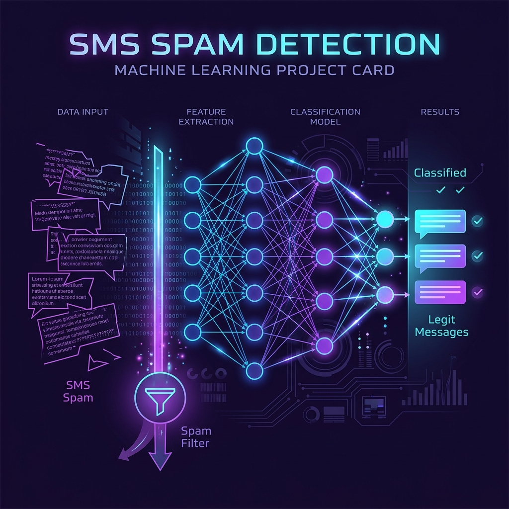

ML
Available for opportunities
Hi, I'm Bebin V
I'm a
Passionate about transforming raw data into meaningful insights.
Bridging the gap between data and decision-making.
0
Projects Completed
Intern
Data Science Internship
0
CGPA / 10
0
Skills & Technologies
Get to know me
About Me
Passionate about analyzing data to uncover insights and support data-driven decisions.
As a graduate in Artificial Intelligence and Data Science, I continuously sharpen my analytical and technical skills. I enjoy transforming complex datasets into clear, meaningful visualizations that tell a compelling story.
Core Expertise
Data Cleaning
Exploratory Analysis
Dashboard Development
Data Visualization
Academic background
My Education
2022 – 2026
St. Xavier's Catholic College of Engineering
7.5
CGPA
B.Tech in Artificial Intelligence and Data Science
Professional journey
My Experience
2025
Internship
Fortura Tech, Nagercoil
Data Science Intern
- Worked on data analysis using Python and data science tools
- Performed comprehensive data cleaning on real-world datasets
- Conducted exploratory data analysis (EDA) to extract insights
- Created impactful visualizations and professional reports
What I work with
My Skills
Programming
Libraries
Pandas
NumPy
Matplotlib
Seaborn
Scikit-Learn
Tools
Excel
GitHub
Jupyter Notebook
VS Code
Concepts
Data Analysis
Data Cleaning
Data Visualization
EDA
Machine Learning
What I've built
Featured Projects
AI
AI-Powered Knowledge Interactive System
Developed an AI-based system to retrieve and present information from a knowledge base using NLP query processing and intelligent information management.
NLP Query Processing
Info Retrieval
Knowledge Mgmt
Interactive UX
Python
NLP
Data Processing
Let's connect
Get In Touch
Have a project in mind or want to collaborate? I'd love to hear from you.